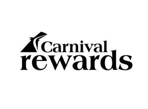

Trade Mark Journal No.2025/025 20 June 2025
UK00004214298 5 June 2025 (35,36,43)

- Class 35
- Arranging and conducting incentive reward programs to promote the sale of cruises and improved services onboard a cruise ship; Promoting the goods and services of others by means of a loyalty rewards program; Administration of a consumer loyalty program to promote restaurant services and retail services of others; Consumer loyalty services for commercial, promotional, and/or advertising purposes, namely, administration of frequent flyer program that allows members to redeem miles for points or awards offered by other loyalty programs; Administration of a customer loyalty program which provides status to return guests and benefits in the nature of invitations to a private party and events, priority check-in and debarkation, complimentary beverages, complimentary laundry, complimentary arcade credits, priority reservations for specialty dining restaurants, and spa, priority dining seating, subscriptions to newsletters, free gifts and upgrades; Business administration of consumer loyalty programs; Administration of frequent flyer programs that allow members to redeem miles for points or awards offered by other loyalty programs; Providing incentive award programs through issuance and processing of loyalty points for purchase of a company's goods and services; Providing incentive award programs for customers through issuance and processing of loyalty points for on-line purchase of a company's goods and services.
- Class 36
- Providing cash and other rebates for credit card use as part of a customer loyalty program.
- Class 43
- Providing temporary accommodation services featuring a customer loyalty program.
Carnival Corporation
Representative: Agile IP LLP